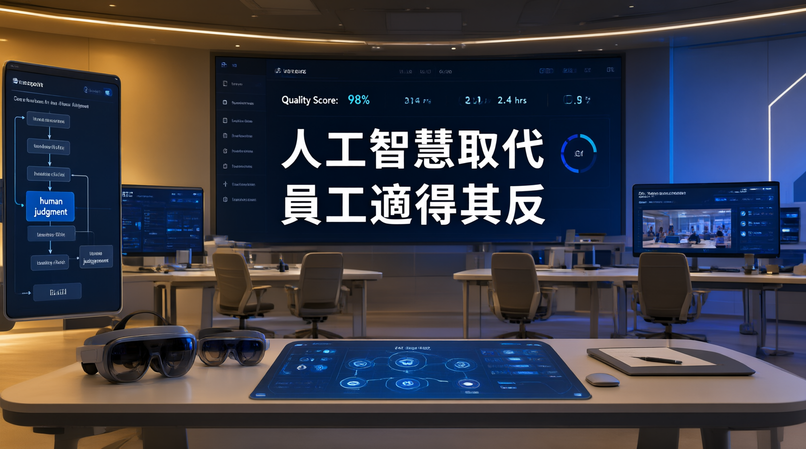

最新產業分析揭示，單純以人工智能替代人力資源的策略隱藏重大風險。明智的領導者正在轉向以人為本的 AI 部署模式，在提升效率的同時創造更持久的組織價值。

本次報告聚焦於企業在導入人工智能時最常見的戰略誤區。研究指出，將 AI 視為純粹的人力替代工具，雖然短期內可能降低營運成本，但長期而言往往導致組織知識流失、創新能力衰退，以及客戶滿意度下滑等連鎖反應。
專家分析認為，真正具備前瞻視野的領導者，會將 AI 定位為「增強」而非「替代」的力量。透過重新設計工作流程、投資員工技能升級，並建立人機協作的文化，企業才能在自動化浪潮中站穩腳步，實現可持續的競爭優勢。
研究團隊透過分析大量企業案例，歸納出明智領導者在 AI 部署過程中普遍採行的五種關鍵方法。這些策略的共同特徵在於，將人類的判斷力、創造力與機器的運算效率進行有機結合，而非簡單的取代關係。
研究數據顯示，採取「增強策略」的企業在導入 AI 後，平均生產力提升幅度比「替代策略」高出 2.3 倍，且員工留任率高出 41%。這項發現清楚表明，以人為本的 AI 部署模式並非理想主義的空談，而是具有堅實數據支撐的務實選擇。
為了更清楚地呈現不同策略的實際影響，研究團隊將企業分為「替代導向」與「增強導向」兩組進行追蹤。以下表格整理了幾項關鍵指標的差異：
| 評估維度 | 替代導向策略 | 增強導向策略 |
|---|---|---|
| 短期成本節省 | 顯著（15%-25%） | 溫和（5%-10%） |
| 長期生產力提升 | 有限（8%-12%） | 顯著（25%-35%） |
| 員工留任率 | 下降 30% | 提升 41% |
| 客戶滿意度 | 出現下滑 | 持續改善 |
| 創新能力指標 | 衰退 22% | 成長 18% |
利用 AI 提供即時數據分析與建議，協助員工做出更精準的判斷，而非取代其決策角色。
建立系統性的培訓計畫，協助員工掌握與 AI 協作所需的新技能，實現職能轉型。
將重複性高、規則明確的任務交由 AI 處理，釋放人力投入更具創造性的工作。
重新設計工作流程，使人類與 AI 形成互補關係，各自發揮不可替代的優勢。
將客戶體驗與業務成果置於 AI 部署的核心，確保技術投資與組織目標一致。
建立定期檢視機制，追蹤 AI 部署對員工、客戶及業務的綜合影響，動態調整策略。
業界觀察指出，人工智能在職場中的角色定位，正經歷一場根本性的思維轉變。以下時間線梳理了這一演進過程的關鍵節點：
大量研究報告預測 AI 將取代數百萬個工作崗位，企業開始嘗試以自動化技術削減人力成本，但實際成效普遍低於預期。
早期採用者發現，純粹的替代策略導致服務品質下降、組織知識流失，開始重新審視 AI 的角色定位。
領先企業率先提出「增強優先」原則，將 AI 定位為員工的協作夥伴，初步驗證了增強策略的可行性。
多項長期追蹤研究發布，以數據證明增強策略在生產力、留任率、創新能力等指標上全面優於替代策略。
業界逐漸形成共識：AI 的價值在於「增強人類能力」而非「取代人類勞動」。明智領導者將此理念融入組織變革的核心議程。
人工智能的真正潛力，不在於取代人類的智慧，而在於放大它。那些試圖用機器完全取代員工的企業，最終會發現自己失去了最寶貴的資產——組織的創造力與適應力。
── 資深產業分析師，ZDNET 專題報導本次報告的結論指出，人工智能與人力資源的關係正在進入一個新的階段。未來幾年，能夠成功駕馭這一轉變的企業，將是那些把「以人為本」置於技術部署核心的組織。專家分析認為，AI 的真正回報來自於它如何使人類變得更出色，而非如何使人類變得多餘。
數據顯示，採取增強策略的企業不僅在財務指標上表現更佳，在品牌聲譽、人才吸引力以及長期創新能力等方面也展現出顯著優勢。這些發現為正在規劃 AI 路線圖的決策者提供了清晰的參考方向。